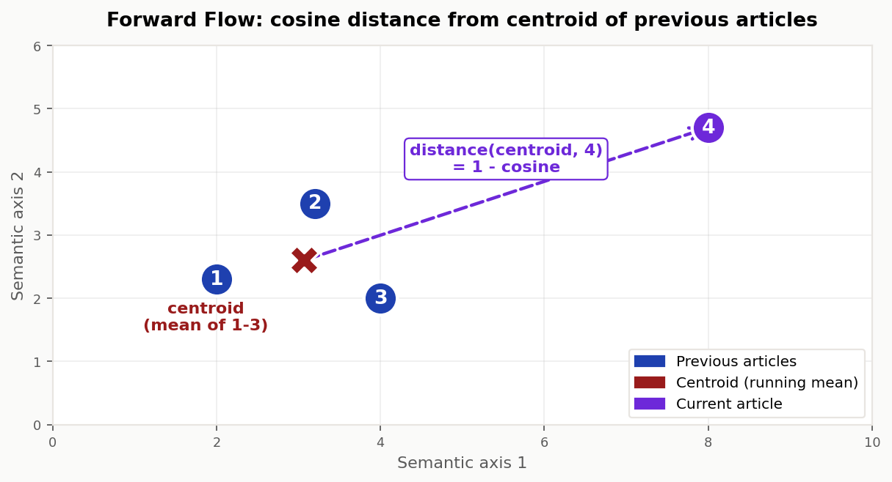
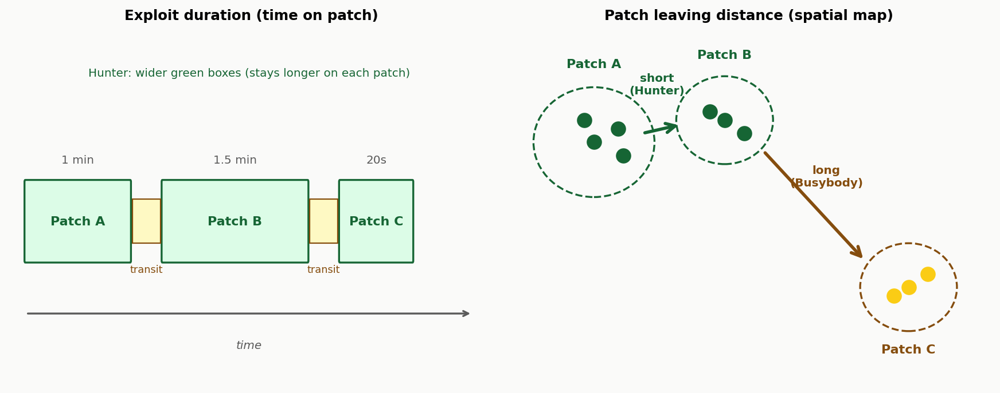
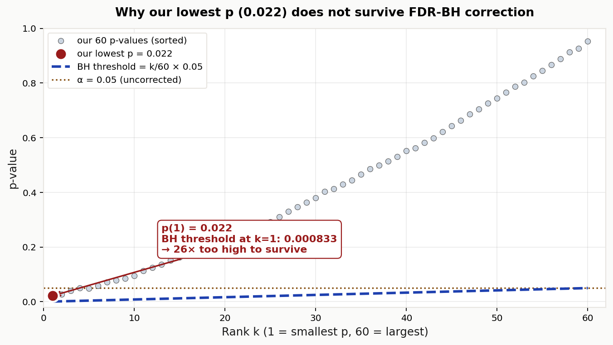
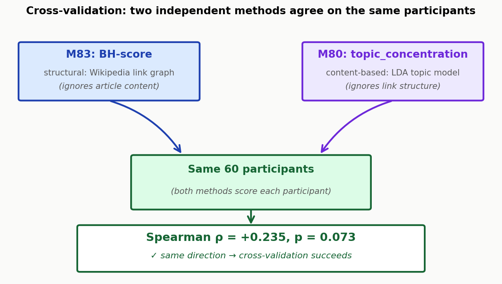

exploit_dur_median_mean (ρ=+0.33,
p=0.022) ושלילית עם patch_leaving_distance_mean
(ρ=-0.31, p=0.033), כלומר Hunters שוהים ארוך
יותר על כל מקור ומדלגים מרחקים קצרים יותר. הכיוון הגיוני, אבל לא חזק דיו לעוצמת המדגם.
topic_concentration של M80 (LDA-based): ρ=+0.235, p=0.073.
כיוון תיאורטי נכון, שתי המתודולוגיות מצביעות על אותם משתתפים כיותר Hunter-like.
coverage_entropy_mean, ρ=+0.173). ייתכן שהרצף
הקצר בקוהורט (חציון 9 כתבות לעמ׳) אינו מספיק לבטא
קפיצות סמנטיות בצורה אמינה.
exploit_dur, patch_leaving_distance) כדי לחסוך בתיקון multiplicity;
(ג) איסוף נוסף של משתתפים.
הניתוח מיישם את המתודולוגיה של Zhou et al. (2024, Science Advances) על קוהורט המשתתפים שעברו את משימת ה-Spatial Search בתנאי Diffuse. השאלה: האם סגנון הסקרנות שזיהינו במסע ה-Wikipedia (Hunter / Busybody / Dancer) מנבא הבדלים בדפוסי החיפוש המרחבי?
בניגוד ל-M80 (סיווג בדיד ל-k=2 או k=3 קבוצות), כאן השמרנו על ציונים רציפים לכל משתתף, נאמן ל-Zhou במאמרו המקורי, הם לא נתנו תווית, רק ציונים על שני צירים בלתי-תלויים.
רשת היא אוסף של צמתים (nodes) המחוברים ב-קשתות (edges). אצלנו כל צומת הוא ערך ב-Wikipedia, וכל קשת היא קישור (hyperlink) קיים בין ערך אחד לשני.
תת-גרף מושרה: כשמשתתף קורא רצף של (למשל) 9 כתבות, אנחנו לוקחים את 9 הצמתים האלה בלבד מתוך הגרף הענק של Wikipedia, ובוחנים אילו קישורים בלתי תלויים כבר קיימים בין כל זוג מתוכם. כלומר לא הקישורים שהמשתתף לחץ עליהם בפועל, אלא כל מי שיכל לחבר ביניהם. זה ה"שלד" התוכני של המסע שלו.
הציון מסכם כמה צפוף וקומפקטי הוא תת-הגרף של המשתתף. ארבעה מדדים על תת-הגרף, כל אחד מנורמל (z-score) בתוך הקוהורט, ואז מצרפים אותם:
Embedding = ייצוג של כתבה כווקטור של 300 מספרים. שתי כתבות שעוסקות בנושאים דומים יקבלו וקטורים קרובים זה לזה במרחב ה-300-ממדי. אנחנו משתמשים ב-fastText מאומן מראש על Wikipedia.
Forward Flow (FF) (Gray 2019; Zhou 2024): כל כתבה במסע נמדדת בכמה היא "רחוקה" (במרחב הסמנטי) מהממוצע של כל הכתבות הקודמות. ממוצע המרחקים = FF.

פיצ'רים שמחושבים על המסלול של המשתתף ברשת היעדים במשימת החיפוש המרחבי:

לכל משתתף בנינו תת-גרף מושרה מתוך הגרף הסטטי של Wikipedia:
חישבנו 4 מדדים על הגרף: n_edges, clustering coefficient,
global efficiency, ו-characteristic path length על ה-LCC.
Z-scored בתוך הקוהורט, וצירפנו לפי הנוסחה של Zhou:
BH = z_edges + z_clust + z_eff − z_path. ערך גבוה = Hunter (רשת צפופה);
נמוך = Busybody (פזורה).
רצף הכתבות (כולל חזרות) הומר לוקטורים סמנטיים באמצעות fastText pre-trained (Wiki-news-subwords-300). לכל כתבה: ממוצע וקטורי-מילה (אחרי stop-words ו-tokenization) ואז L2-normalisation. עבור כל מיקום i ≥ 2 חישבנו את המרחק הקוסינוס הממוצע אל כל הכתבות הקודמות (per Gray 2019), וממצענו על פני המיקומים. ערך גבוה = קפיצות סמנטיות גדולות (Dancer-like).
Spearman correlation לכל אחד מ-30 הפיצ'רים המרחביים של M81 מול כל אחד משני הצירים = 60 השוואות. תיקון FDR-BH משותף על כל 60 ההשוואות, α=0.05.
exploit_dur_median_mean: ρ=+0.326, p=0.022, p_FDR=0.596, n=49exploit_dur_mean_mean: ρ=+0.320, p=0.025, p_FDR=0.596, n=49exploit_dur_median_sd: ρ=+0.314, p=0.048, p_FDR=0.596, n=40exploit_dur_mean_sd: ρ=+0.312, p=0.050, p_FDR=0.596, n=40patch_leaving_distance_mean: ρ=-0.309, p=0.033, p_FDR=0.596, n=48coverage_entropy_mean: ρ=+0.173, p=0.186, p_FDR=0.808, n=60levy_alpha_sd: ρ=-0.168, p=0.199, p_FDR=0.808, n=60exploit_dur_median_mean: ρ=-0.157, p=0.281, p_FDR=0.808, n=49total_collected_mean: ρ=+0.140, p=0.287, p_FDR=0.808, n=60exploit_dur_mean_mean: ρ=-0.139, p=0.341, p_FDR=0.808, n=49הבעיה: כשבודקים הרבה השערות במקביל, כמה מהן יראו "מובהקות" גם אם אין שום קשר אמיתי בשטח, רק במזל. עם α=0.05 לכל בדיקה, אם נריץ 60 בדיקות על נתונים אקראיים לחלוטין, נצפה ל-3 בדיקות (=60×0.05) שייראו מובהקות, פשוט כי קבענו את הסף ב-5% טעות.
הפתרון FDR-BH (Benjamini & Hochberg 1995): במקום לתקן באופן קונסרבטיבי
(Bonferroni: לחלק α ב-מספר הבדיקות), אנחנו שולטים בשיעור הגילויים השגויים.
מסדרים את ה-p-values מהקטן לגדול ומשווים אותם לסף הולך וגדל. הסף ל-p(k)
(ה-p במקום k אחרי מיון) הוא k/m × α כאשר m=60.

מה אומר אצלנו "0 מתוך 60"? אחרי המיון, אף p-value לא נמצא מתחת לסף BH המתאים לו. זה לא אומר "הוכחנו שאין קשר", זה אומר "לא הצלחנו להראות שיש קשר ברמת הביטחון הזו". בעוצמה סטטיסטית נמוכה (N=60) זה צפוי גם אם קיים אפקט אמיתי בעוצמה בינונית (ρ≈0.3).
למרות שאף אחד מהממצאים לא שרד תיקון, יש שלושה דברים חשובים שכן אפשר להסיק מהקורלציות החזקות ביותר:
הסימן של הקורלציה (חיובי / שלילי) הוא מידע, גם בלי מובהקות. למשל:
exploit_dur_median_mean: ρ=+0.33 (→ Hunter שוהה יותר על כל מקור).
תיאורטית צפויpatch_leaving_distance_mean: ρ=−0.31 (→ Hunter עובר מרחקים קצרים בעזיבת מקור).
תיאורטית צפוישני הסימנים תואמים את ההגדרה התיאורטית של Hunter (חקירה ממוקדת, ניצול עמוק). זה אומר שאם קיים אפקט אמיתי, הוא כנראה בכיוון הזה, וזה ממקד את ההשערה הבאה.
ρ=0.3 הוא effect size בינוני בקנה-מידה של Cohen (לא חלש, לא חזק). לא מובהק כאן בגלל ש-N=60 קטן, לא בגלל שהאפקט קטן. בהשוואה לרוב הקשרים בפסיכולוגיה קוגניטיבית, |ρ|=0.3 הוא קשר "ניתן לזיהוי" אם רק יהיה לנו מספיק כוח סטטיסטי.
שמתי לב שבחמשת הראשונים ארבעה הם וריאציות של exploit duration (mean_mean, median_mean, mean_sd, median_sd), וכולם בכיוון חיובי דומה. זה מצביע על אות אמיתי בכיוון של exploit duration, ולא קשר ספציפי לפיצ'ר אחד שצץ במקרה.
Cross-validation זה הרעיון שכשיש לך שני אופנים שונים למדוד את אותו משהו, אתה רוצה שהם יסכימו זה עם זה. אם שניהם אומרים "המשתתף הזה Hunter", גדל הסיכוי שהם תופסים תכונה אמיתית, ולא רעש של שיטה מסוימת.
אצלנו יש שתי מתודולוגיות לחלוטין שונות:

למה זה חשוב למחקר שלך? אם הקורלציה היתה שלילית או אפס, זו היתה אזהרה גדולה: אחת מהשיטות (או שתיהן) לא מודדת את מה שאנחנו חושבים שהיא מודדת. העובדה שהיא חיובית, גם אם בעוצמה צנועה, מצדיקה את ההמשך עם אחת השיטות (או שתיהן) לקוהורט גדול יותר.
שני המדדים החזקים ביותר (כיוון נכון, אפקט בינוני) הם exploit_dur_median_mean
ו-patch_leaving_distance_mean. בסעיף זה נסביר את הלוגיקה התיאורטית מאחורי
כל אחד מהם, ולמה זה הופך אותם למועמדים מבטיחים לבדיקה ממוקדת בקוהורט גדול יותר.
exploit_durבמשימת החיפוש המרחבי, "patch" הוא אשכול מקומי של יעדים פוריים. כשהמשתתף מגיע לאשכול כזה, יש לו שתי אפשרויות: לנצל (להמשיך לאסוף יעדים שם) או לעזוב (לחפש patch חדש).
Hunter מנקודת מבט תיאורטית: מי שמתאפיין בחקירה ממוקדת ועמוקה יישאר ב-patch זמן רב יותר, גם אחרי שהקצב יורד. הוא יותר עקבי, פחות נוטה לקפוץ.
Busybody / Dancer תיאורטית: מי שמונע על-ידי גירוי, יעזוב מהר יותר ברגע שהמקור הזה "נמאס", גם אם עוד יש שם דברים לאסוף. גירוי-יתר < הגירוי הבא.
patch_leaving_distanceכשהמשתתף עוזב patch, יש לו "מרחב" שלם של patches אחרים לבחור מהם. השאלה: איזה patch הוא בוחר?
Hunter תיאורטית: יעבור ל-patch סמוך, כי הוא חוקר באזור הצר. מרחק קצר = החלפה למקור דומה.
Busybody / Dancer תיאורטית: יקפוץ למקום אחר לגמרי, מרחק ארוך = החלפה לאזור חדש לחלוטין.
שני המדדים האלה (exploit_dur ו-patch_leaving_distance) הם
שני צדדים של אותו מטבע: איך אתה מטפל ברצף של הזדמנויות מקומיות לעומת חיפוש
אסטרטגי רחב.
exploit_dur_median_mean ו-patch_leaving_distance_mean בלבד (2
השוואות, לא 60), על קוהורט מאוחד Diffuse+Clumpy (N=130) עם תנאי כ-covariate. עם 2
השוואות בלבד, α=0.025 לכל אחת, וזה מאפשר עוצמה סטטיסטית של ~0.85 לאיתור ρ=0.3.
scripts/m83_zhou_diffuse_styles.py (וגם m83a_fetch_wiki_links.py, m83b_compute_fasttext.py)output/m83_per_participant.csvoutput/m83_spearman_correlations.csvoutput/m83_zhou_diffuse_report.pdfoutput/m83_wiki_link_graph.json (244 כתבות, 1807 קשתות)output/m83_article_embeddings.npz (244 × 300)